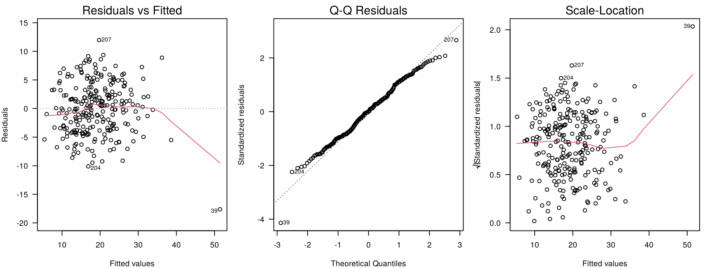
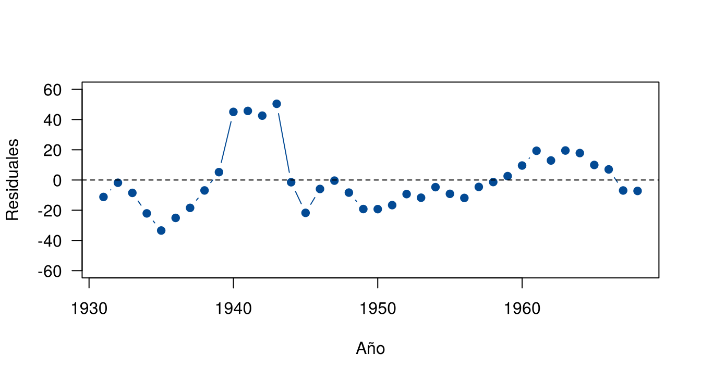
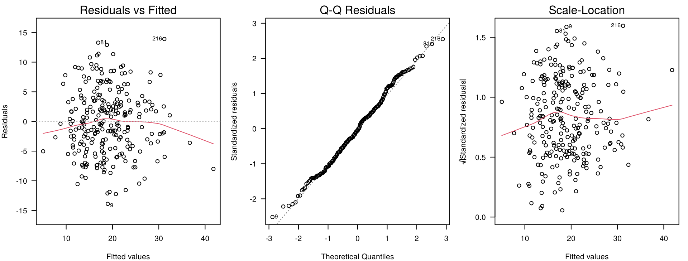
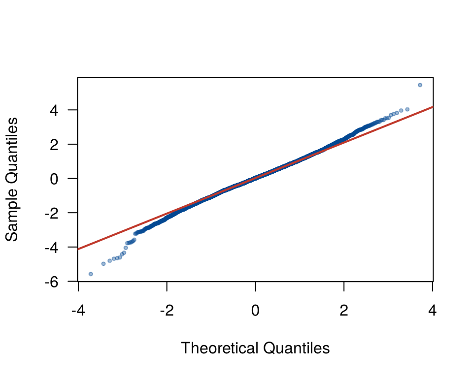

Esta página revisa los cuatro supuestos del modelo de la grasa corporal según el abdomen. El orden es siempre el mismo: primero los gráficos de residuales, después las pruebas como complemento. Los gráficos muestran qué falla y dónde; las pruebas dan un valor p, pero no dicen si el problema es grande ni de dónde viene.
Al final se verá que una sola observación cambia la conclusión de casi todas las pruebas. Los bloques de código se ejecutan en orden.
Los datos se descargan aquí:
grasa.csv. Guarde el archivo en la
carpeta data de su proyecto de
RStudio.
grasa <- read.csv("data/grasa.csv")
modelo <- lm(grasa ~ abdomen, data = grasa)Los residuales ordinarios, \(e_i = y_i - \hat{y}_i\), no tienen todos la misma varianza: los de los puntos con \(x\) lejos de la media varían menos, porque esos puntos “jalan” la recta hacia ellos. Por eso se usan versiones estandarizadas, que se comparan con una misma escala.
| Residual | Fórmula | En R | Uso |
|---|---|---|---|
| Ordinario | \(e_i = y_i - \hat{y}_i\) | residuals(modelo) |
En las unidades de \(y\) |
| Estandarizado | \(r_i = \dfrac{e_i}{\hat{\sigma}\sqrt{1 - h_{ii}}}\) | rstandard(modelo) |
Gráficos y normalidad |
| Estudentizado (R-student) | Igual, pero con \(\hat{\sigma}_{(i)}\), la estimación sin la observación \(i\) | rstudent(modelo) |
Detectar atípicos |
\(h_{ii}\) es el apalancamiento de la observación \(i\): mide qué tan lejos está su \(x\) del centro de los datos (página Puntos influyentes). Los residuales estandarizados y estudentizados se leen como valores \(z\): la mayoría debería estar entre −2 y 2, y valores más allá de ±3 son raros.
head(data.frame(ordinario = residuals(modelo), estandarizado = rstandard(modelo),
estudentizado = rstudent(modelo))) ordinario estandarizado estudentizado
1 -2.036065 -0.4523353 -0.4516146
2 -6.449306 -1.4337072 -1.4367556
3 8.384730 1.8617242 1.8710123
4 -4.437934 -0.9856628 -0.9856064
5 4.507555 1.0014278 1.0014335
6 0.582942 0.1293942 0.1291395plot() aplicada a un modelo produce cuatro gráficos de
diagnóstico. Los tres primeros revisan los supuestos:
par(mfrow = c(1, 3), mar = c(4, 4, 2, 1))
plot(modelo, which = 1:3, las = 1)
Gráficos de diagnóstico del modelo de la grasa según el abdomen.
| Gráfico | Qué revisa | Qué se espera | En el ejemplo |
|---|---|---|---|
| Residuals vs Fitted | Linealidad y varianza | Franja horizontal sin forma; la línea roja (un suavizado) cerca de cero | Franja sin forma clara; la línea se curva solo en el extremo derecho, donde está la observación 39 |
| Q-Q Residuals | Normalidad | Puntos sobre la diagonal | Casi recto, con la observación 39 separada abajo |
| Scale-Location | Varianza constante | Línea roja horizontal | Horizontal en casi todo el rango; sube en el extremo derecho, otra vez por la observación 39 |
R marca con su número las tres observaciones con los residuales más grandes. La 39 aparece en los tres gráficos: es el hombre de 148 cm de abdomen, con menos grasa de la que predice la recta.
Hay que mirar el gráfico sin esperar perfección. Con datos reales, siempre hay algo de irregularidad. La pregunta es si hay un patrón claro.
Hay dos formas sencillas de probar si una recta es suficiente.
Agregar un término cuadrático. Si la relación es curva, el término \(x^2\) debería ser significativo:
modelo_cuad <- lm(grasa ~ abdomen + I(abdomen^2), data = grasa)
anova(modelo, modelo_cuad)Analysis of Variance Table
Model 1: grasa ~ abdomen
Model 2: grasa ~ abdomen + I(abdomen^2)
Res.Df RSS Df Sum of Sq F Pr(>F)
1 250 5094.9
2 249 4802.7 1 292.28 15.154 0.0001273 ***
---
Signif. codes: 0 '***' 0.001 '**' 0.01 '*' 0.05 '.' 0.1 ' ' 1anova() con dos modelos compara si el modelo grande
reduce la suma de cuadrados del error más de lo que se espera por azar.
El valor p es 0.00013: hay evidencia de curvatura. Pero el gráfico no
mostraba una curva clara. ¿De dónde viene? Se vuelve a esto al final de
la página.
Prueba de falta de ajuste. Cuando hay varias
observaciones con el mismo valor de \(x\) (réplicas), se compara
la recta con un modelo que da una media distinta a cada valor de \(x\), sin forma impuesta. En
R se hace con factor():
length(unique(grasa$abdomen)) # valores distintos de abdomen en 252 hombres[1] 185anova(modelo, lm(grasa ~ factor(abdomen), data = grasa))Analysis of Variance Table
Model 1: grasa ~ abdomen
Model 2: grasa ~ factor(abdomen)
Res.Df RSS Df Sum of Sq F Pr(>F)
1 250 5094.9
2 67 1438.1 183 3656.8 0.931 0.6504El valor p es 0.65: las medias de los grupos no se alejan de la recta más de lo esperado. La prueba tiene poca potencia aquí, porque la mayoría de los valores de abdomen aparecen una sola vez.
La prueba de Breusch-Pagan ajusta una regresión de los residuales al cuadrado sobre \(x\). Si la varianza cambia con \(x\), esa regresión tiene pendiente.
\[ H_0: \text{la varianza es constante} \qquad H_1: \text{la varianza cambia con } x \]
Se usa la función bptest() del paquete
lmtest. El paquete lmtest reúne pruebas para
revisar modelos de regresión; se instala una sola vez con
install.packages("lmtest").
library(lmtest)
bptest(modelo)
studentized Breusch-Pagan test
data: modelo
BP = 10.138, df = 1, p-value = 0.001453El valor p es 0.0015: la prueba rechaza la varianza constante, aunque el tercer gráfico solo subía en el extremo donde está la observación 39.
La prueba de White es una variante que también incluye \(x^2\), para detectar una varianza que crece y luego decrece:
bptest(modelo, ~ abdomen + I(abdomen^2), data = grasa)
studentized Breusch-Pagan test
data: modelo
BP = 59.234, df = 2, p-value = 0.0000000000001372La prueba de Shapiro-Wilk se aplica a los residuales estandarizados:
shapiro.test(rstandard(modelo))
Shapiro-Wilk normality test
data: rstandard(modelo)
W = 0.98969, p-value = 0.0703Con un valor p de 0.07, no se rechaza la normalidad al 5 %. Esto no prueba que los errores sean normales: solo dice que la prueba no encontró evidencia en contra. El gráfico Q-Q es más informativo.
No se usa la prueba de Kolmogorov-Smirnov con
ks.test(residuos, "pnorm", mean(residuos), sd(residuos)):
al estimar la media y la desviación con los mismos datos, su valor p es
incorrecto (sale demasiado grande).
La independencia se revisa cuando hay un orden en los datos, casi siempre el tiempo. En los datos de grasa no lo hay: el número de cada hombre no indica cuándo se midió. Aplicar aquí una prueba de independencia no tiene sentido.
Para ver cómo se revisa, se usa otro caso: la tasa de condenas de
mujeres en Canadá (por cada 100 000) según la fecundidad (hijos por cada
1 000 mujeres), de 1931 a 1968 (Fox y Hartnagel, 1979; datos del paquete
carData).
Los datos se descargan aquí:
condenas.csv. Guarde el archivo
en la carpeta data de su proyecto de
RStudio.
condenas <- read.csv("data/condenas.csv")
modelo_c <- lm(condenas_mujeres ~ fecundidad, data = condenas)
coef(modelo_c) (Intercept) fecundidad
264.60671541 -0.05508818 Con datos en el tiempo, se grafican los residuales en orden:
plot(condenas$anio, residuals(modelo_c), type = "b", pch = 19, col = "#034A94", las = 1,
xlab = "Año", ylab = "Residuales", ylim = c(-60, 60))
abline(h = 0, lty = 2)
Residuales del modelo de condenas en orden de tiempo.
Los residuales forman rachas: son negativos de 1931 a 1938, positivos durante la Segunda Guerra Mundial (1939 a 1943), negativos de 1944 a 1958 y positivos de 1959 a 1966. Si fueran independientes, cambiarían de signo al azar. La prueba de Durbin-Watson mide la correlación entre cada residual y el anterior:
dwtest(modelo_c, alternative = "two.sided")
Durbin-Watson test
data: modelo_c
DW = 0.45225, p-value = 0.0000000009425
alternative hypothesis: true autocorrelation is not 0El estadístico \(DW\) vale cerca de 2 si no hay correlación, y se acerca a 0 si la correlación es positiva. Aquí \(DW = 0.45\) y el valor p es casi cero: los errores están correlacionados en el tiempo. Los errores estándar de este modelo subestiman la incertidumbre, y la pendiente parece más precisa de lo que es. Para estos datos se necesitan modelos de series de tiempo.
Tres pruebas del modelo de la grasa señalaron problemas o casi: curvatura (p = 0.00013), varianza no constante (p = 0.0015) y normalidad en el límite (p = 0.07). Los gráficos, en cambio, solo mostraban un punto separado: la observación 39. Se repiten las pruebas sin ella:
sin39 <- grasa[grasa$id != 39, ]
modelo_sin39 <- lm(grasa ~ abdomen, data = sin39)
c(curvatura = anova(modelo_sin39, lm(grasa ~ abdomen + I(abdomen^2), data = sin39))[2, 6],
breusch_pagan = unname(bptest(modelo_sin39)$p.value),
shapiro = shapiro.test(rstandard(modelo_sin39))$p.value) curvatura breusch_pagan shapiro
0.3144877 0.9718519 0.1931575 Sin ese hombre, ninguna prueba encuentra problemas. Un solo punto, de 252, producía la curvatura, la heterocedasticidad y buena parte de la señal contra la normalidad.
Esto no quiere decir que haya que borrarlo. Es un hombre real de 165 kg, no un error. Quiere decir que antes de concluir que un supuesto falla, hay que ver si el problema es de todos los datos o de unos pocos. La página Puntos influyentes muestra cómo identificarlos y qué hacer con ellos.
| Recomendación | Por qué |
|---|---|
| Graficar antes de probar | El gráfico muestra qué falla y dónde; el valor p no |
| Fijar el nivel de significancia antes de ver los resultados | Elegir \(\alpha\) después para que una prueba rechace o no es hacer trampa |
| No elegir la prueba según su resultado | Con varias pruebas para lo mismo, alguna rechazará por azar |
| No concluir que el supuesto se cumple porque no se rechazó | No rechazar solo dice que no hay evidencia en contra |
| Con \(n\) grande, mirar la magnitud | Con miles de datos, las pruebas rechazan desvíos sin importancia práctica |
| Con \(n\) pequeño, desconfiar de un “no rechazo” | Las pruebas tienen poca potencia |
| Pensar en el diseño para la independencia | Las pruebas de independencia necesitan un orden en los datos |
| Problema | Causa | Solución |
|---|---|---|
| Aplicar Durbin-Watson a datos sin orden | La prueba depende del orden de las filas | Usarla solo con datos en el tiempo o en otro orden con sentido |
Usar ks.test() con la media y la
desviación de los residuales |
El valor p es incorrecto | Usar Shapiro-Wilk y el gráfico Q-Q |
| Decir “los residuales son normales” porque \(p > 0.05\) | No rechazar no prueba la normalidad | Decir “no hay evidencia contra la normalidad” |
| Concluir que la varianza no es constante por una prueba | Un solo punto puede producir el rechazo | Revisar los gráficos y los puntos influyentes |
| Correr muchas pruebas y quedarse con la que conviene | Se infla la probabilidad de error | Elegir las pruebas antes de ver los datos |
Revise los supuestos del modelo de la grasa según la circunferencia del pecho: gráficos y las pruebas de Breusch-Pagan y Shapiro-Wilk. ¿Aparece otra vez la observación 39?
modelo_pecho <- lm(grasa ~ pecho, data = grasa)
par(mfrow = c(1, 3), mar = c(4, 4, 2, 1))
plot(modelo_pecho, which = 1:3, las = 1)
Gráficos de diagnóstico del modelo de la grasa según el pecho.
bptest(modelo_pecho)$p.value BP
0.7146967 shapiro.test(rstandard(modelo_pecho))$p.value[1] 0.3073198Sí: el hombre 39 también tiene el pecho más grande de la muestra y vuelve a aparecer separado en los gráficos. Las conclusiones de las pruebas deben leerse con ese punto en mente.
Aplique dwtest() al modelo de la grasa. Luego desordene
las filas al azar (set.seed(2026)) y repita. ¿Por qué
cambia el resultado?
dwtest(modelo)$p.value[1] 0.07435958set.seed(2026)
desordenado <- grasa[sample(nrow(grasa)), ]
dwtest(lm(grasa ~ abdomen, data = desordenado))$p.value[1] 0.9268532El resultado cambia porque Durbin-Watson compara cada residual con el de la fila anterior. Si el orden de las filas no significa nada, la prueba tampoco.
Simule 5 000 errores de una distribución \(t\) con 10 grados de libertad, que se parece mucho a la normal. Aplique Shapiro-Wilk y haga el gráfico Q-Q. ¿Qué concluye?
set.seed(2026)
e <- rt(5000, df = 10)
shapiro.test(e)$p.value[1] 0.00000000004413577qqnorm(e, pch = 19, cex = 0.5, col = "#034A9460", las = 1, main = "")
qqline(e, col = "#C0392B", lwd = 2)
Gráfico Q-Q de 5 000 valores de una t con 10 grados de libertad.
Con 5 000 datos la prueba suele rechazar la normalidad, aunque el gráfico muestra que la diferencia está solo en los extremos y es pequeña. Para la inferencia sobre la pendiente, esa diferencia no tiene importancia.
Última revisión: 9 de noviembre de 2026.